Phase 4 ("Overnight v1.0", 42 goals) ran end to end, then Phase 5 ("Next level: graphics & gameplay") was created and worked until morning. Every merge passed type-checks, the build and the unit tests; campaign regressions ran in autoplay before each deploy.
The biggest new things, and where to find them.
Captured from the game during the night (some at small size from the testing browser).
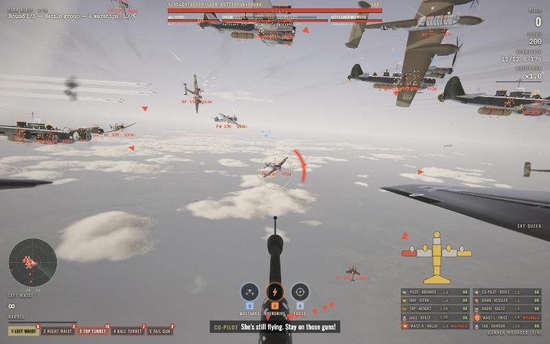
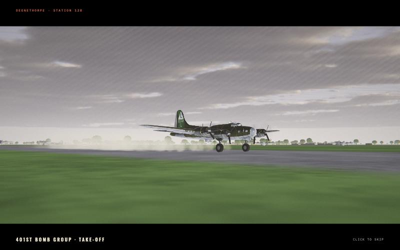
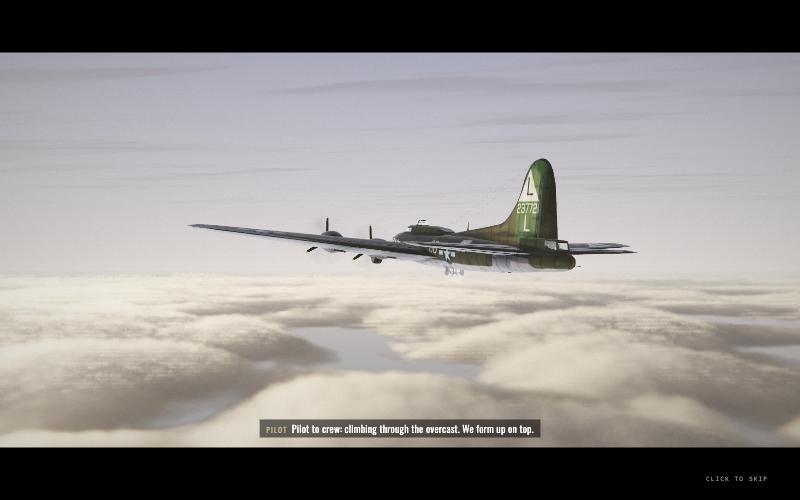
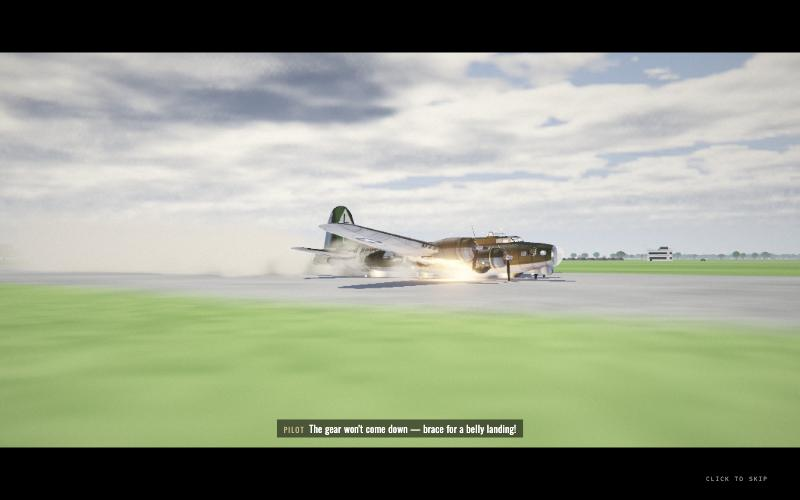
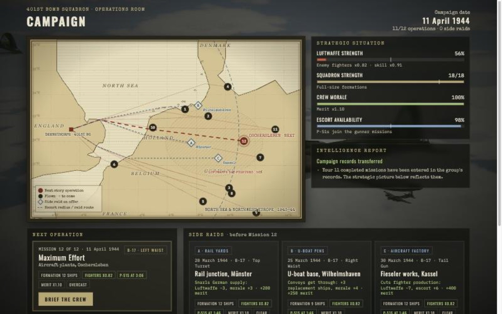
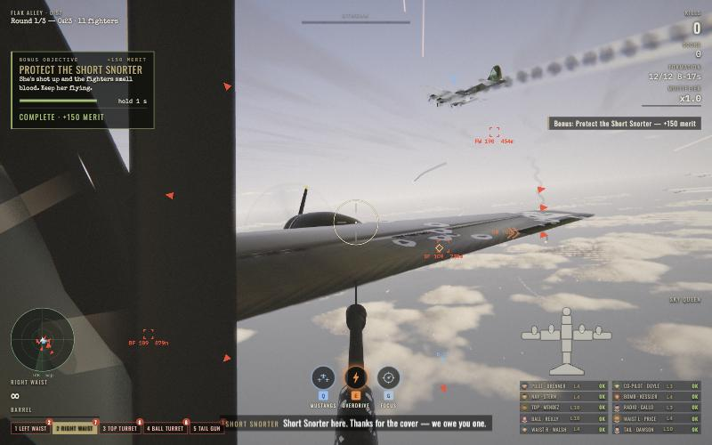
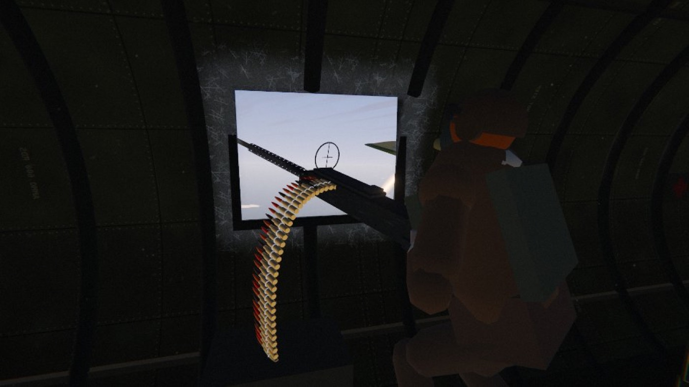
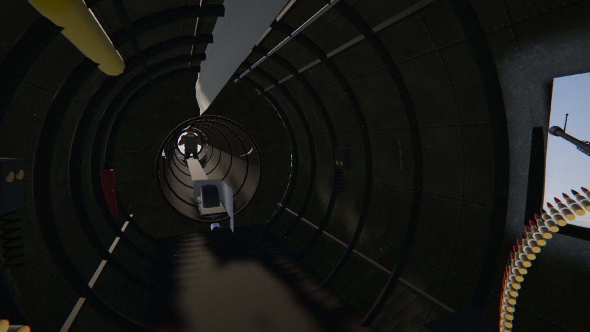
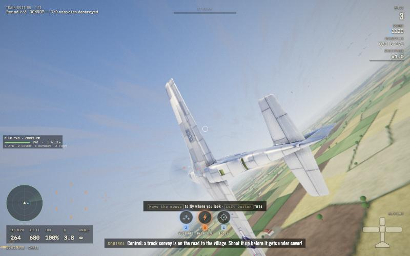
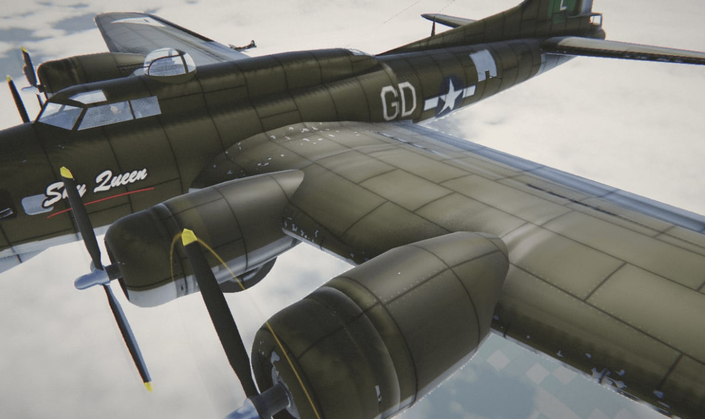
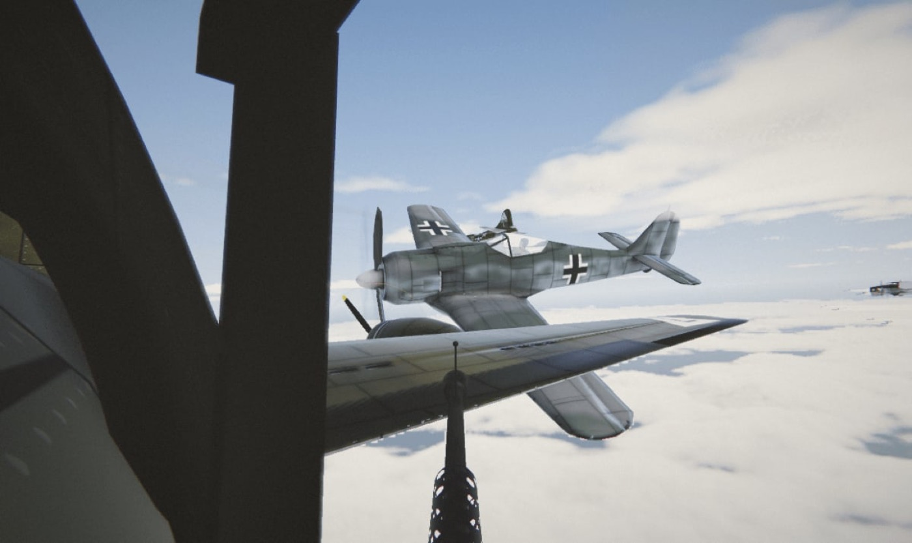
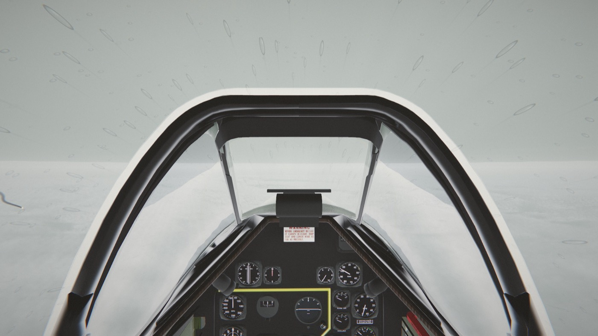
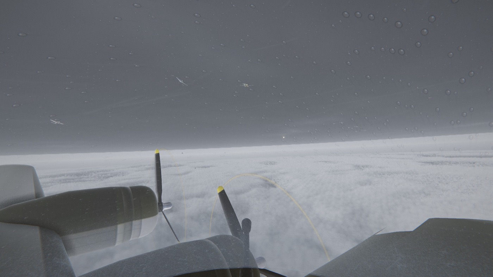
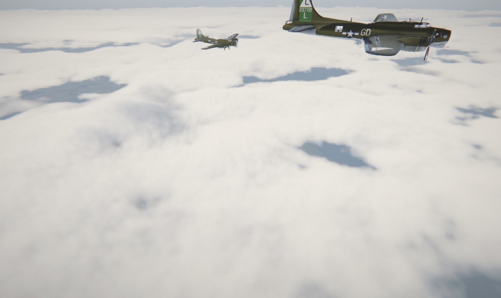
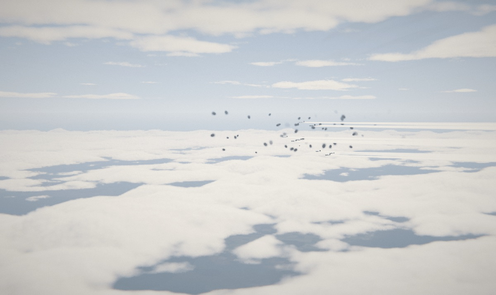
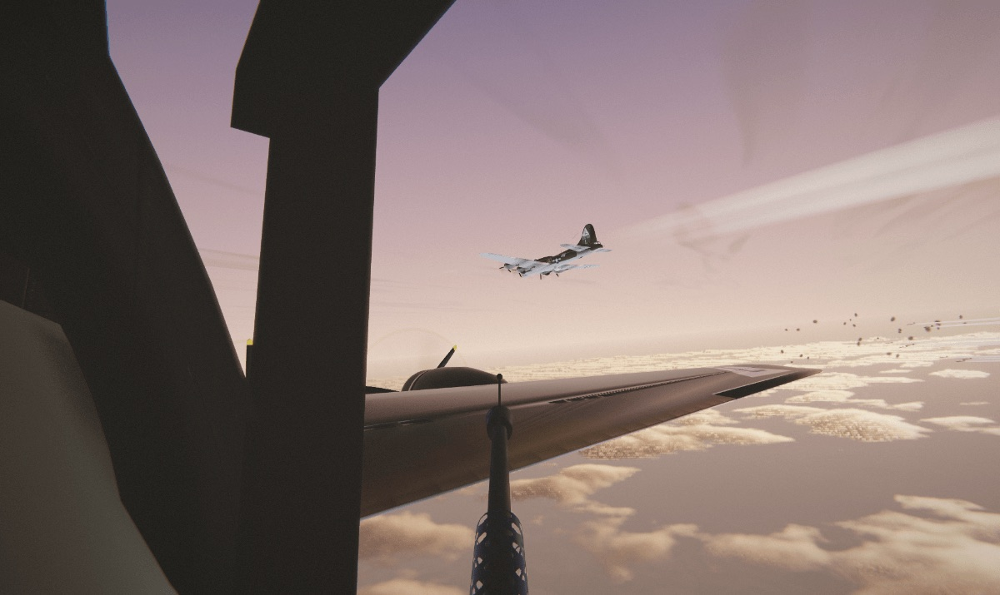
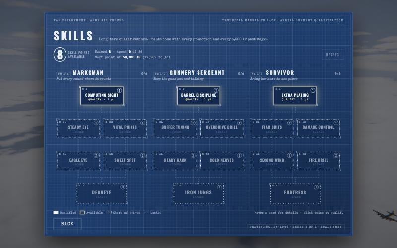
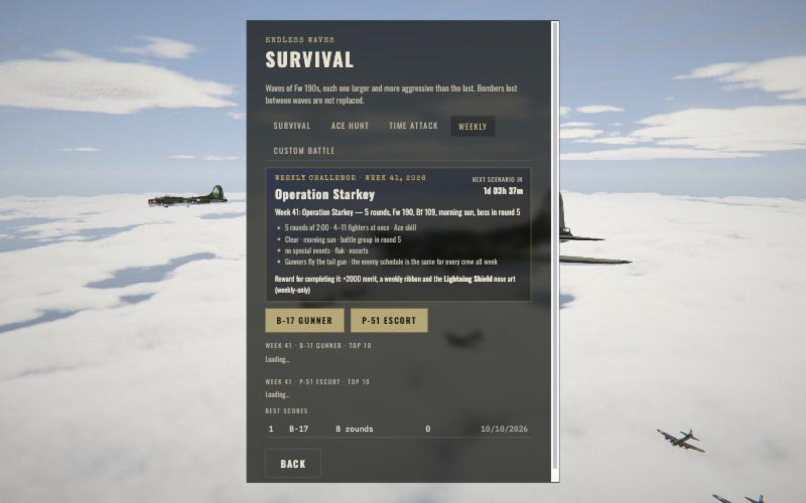
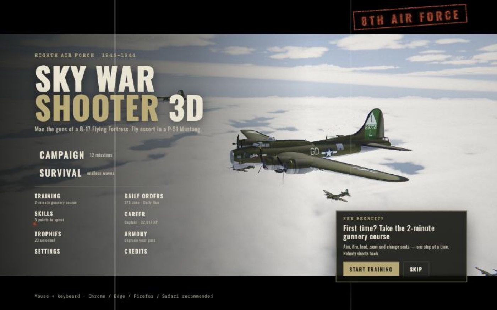
Open points and decisions for you.
Created overnight once Phase 4 was nearly done; goals 17–26 were added during the night.
| # | Goal | Result |
|---|---|---|
| Graphics | ||
| 1 | Cloud quality: temporal reprojection (more detail at the same cost), sharper silver linings, cloud shadows on the cloud sea | Donequarter-res temporal reprojection with jitter + neighbourhood clamp (High 12–20 % faster), sharp forward-scatter silver linings, cloud shadows on the cloud sea and on the formation |
| 2 | Aircraft surfaces: procedural panel lines, rivets, weathering, oil streaks, chipped paint, roughness variation (B-17 + fighters) | Doneprocedural panel lines + rivets (object-space projection), panel tone patchwork, chipped leading edges and walkways, exhaust/oil streaks per engine, grime, roughness wear; per model, composes with tints/paint/nose art/damage; distance fade (no shimmer); Low off, Medium lines, High/Ultra all |
| 3 | Volumetric-looking explosions: raymarched or flipbook fireballs, shockwave distortion | Doneraymarched noise fireballs (white core → orange → red → sunlit black smoke), shock shells, burning debris with smoke trails, cook-off pops, multi-stage heavy and warship blasts, lumpy flak puffs; pooled + LOD, no new shader compiles |
| 4 | Heat haze and distortion: engine exhausts, explosions, muzzle blast (screen-space refraction) | Donescreen-space heat haze: B-17 nacelle plumes, P-51 / Fw 190 exhausts, muzzle-blast shimmer, explosion shock ripples (off on Low, halved with reduced motion) |
| 5 | Explosion and muzzle light on clouds and aircraft; glowing tracers lighting the scene | Done4 pooled combat lights (explosions, heavy-gun muzzle flashes, hits) tint nearby aircraft and the player\'s gun; fixed light count, no recompiles. Tracer glow sprites not done |
| 6 | Night mission: moonlight, searchlights, flares, flak flashes in cloud, exhaust flames, night-fighter attacks | Partlynight mood with moonlight, searchlights, exhaust flames and night fighters (Night Fighter operation); flares and flak flashes in cloud not done |
| 7 | Living interior: the other waist gunner and crew visible and animated, spent brass piles, breath fog at altitude | Donethe other waist gunner (tracks and fires with flash, recoil and brass; slumps when wounded, rookie replaces him), radio room through the open door, ball turret top turning in the floor, tail gunner down the tunnel, brass piling up (900 cap), breath fog in ADS, frost growing on the windows, swinging sun shafts, free look (hold C) |
| 8 | Canopy/turret glass effects: frost, rain streaks in storms, scratches catching the sun, oil smears | DoneP-51 canopy/windscreen + B-17 top dome, ball port and tail window: airspeed-driven rain streaks in storms, scratches that glint near the sun, oil build-up from engine damage, frost in cold missions, persistent bullet cracks; faded around the gunsight |
| Gameplay | ||
| 9 | Online co-op prototype: two players in one bomber (different seats) via Firebase signalling + WebRTC | Beta6-character room codes over Firestore (validated, expiring rules), WebRTC data channels, host-authoritative world, guest mans another gun (its shots are real on the host), 20 Hz snapshots + 100 ms interpolation, PARTNER seat tags, latency bars, disconnect handling. Limits: no TURN relay, guest score local only |
| 10 | Custom battle: pick role, enemies, numbers, weather, time of day, boss on/off | DoneCustom Battle screen (role/seat, enemy types, counts, skill, rounds/endless, weather, sun, boss round, events/flak/escorts), saved setup, no leaderboard |
| 11 | Role reversal: P-51 interceptor mission against a Ju 88 / He 111 raid, and a night-fighter defence | Done"Defend the Field" (Ju 88 raid with Bf 109 cover on your airfield) and "Night Fighter" (moonlit, searchlight cones, exhaust flames, Bf 110 night fighters, lit gunsight), 3 rounds each, own leaderboards |
| 12 | Wingman commands in pilot mode (attack my target, cover me, protect bombers) | DoneAI wingman in every P-51 mission: 1 attack my target, 2 cover me, 3 protect the bombers, 4 form up; radio acknowledgements, HUD panel, replacement if lost; keys/gamepad/touch |
| 13 | Persistent pilot/gunner skill tree (perk points from rank-ups) | Done18 nodes in 3 branches (Marksman / Gunnery Sergeant / Survivor) with capstones (Deadeye, Iron Lungs, Fortress), points from promotions + every 3,000 XP past Major, respec for merit, blueprint screen + hangar section |
| 14 | Dynamic campaign map: choose the next target, consequences (losses, morale, Luftwaffe strength) | Doneprocedural 1943–44 strategic map, Luftwaffe strength / squadron / morale / escort gauges with real effects, 2–3 side raids per gap (rail, airfields, oil, U-boat pens, factories), intelligence reports, tour summary, save migration |
| 15 | Weekly challenge event with its own leaderboard and a special reward | Doneseeded ISO-week scenario, its own online leaderboard per role, +2000 merit + weekly ribbon + exclusive "Lightning Shield" nose art, countdown card |
| 16 | Replay theatre: save best moments, scrub, free camera, export screenshots | Done90 s recorder (12 Hz, 48 aircraft, tracers, explosions, auto-marked moments), timeline scrub + speeds, player/orbit/free/auto-director cameras, photo mode (FOV, DOF, exposure, 1–3× PNG), 5 saved moments (IndexedDB) in a title-menu Theatre |
| Extra goals (added overnight) | ||
| 17 | New German aircraft from FlightGear (He 111 bomber, Me 410 with BK 5 cannon, optionally He 219 / Ta 152 / Do 335) as new enemy types | DoneHe 111 (raid bomber formations, dorsal gunner) and Do 335 (diving slashing interceptor) converted from FlightGear (GPL v2); Me 410 with telegraphed BK 5 50 mm cannon runs and rear barbettes on the Bf 110 airframe (no GPL Me 410 model exists); He 219 / Ta 152 not available |
| 18 | P-51 ground attack: strafing trains, flak towers and airfields at low level | Done"Train Busting" special operation: procedural countryside (fields, rivers, railway, village, 9,800 trees), 3 rounds (train with boiler burst, convoy, airfield with parked aircraft), 20 mm flak and a quad flak tower firing back, low-level Fw 190s, PULL UP warning, crash rules, wingman ground attacks, own leaderboard |
| 19 | Arabic for every screen added overnight (campaign map, skills, custom battle, weekly, co-op, theatre, wingman) | Donecampaign map, skills, custom battle, weekly, theatre, FPS counter, raid missions + wingman, co-op, canvas HUDs, special events and tactics; RTL mirroring, Arabic number agreement, coverage tests |
| 21 | Nemesis system: persistent named Luftwaffe aces with traits, grudges, scars, promotions and a dossier screen | Done8 Experten (name, rank, unit, aircraft, colours/emblem, trait-driven AI), appearances with radio memory + dossier card, outcomes persist (victories, promotions, escapes with patches and grudges, deaths, hospital), replacements, bounties + medal + achievements, "Luftwaffe Experten" screen |
| 22 | Audio pass 3: engine voices for the new aircraft and warships, BK 5 / flak sounds, distance-aware explosions, waist ambience (wind, creaks, brass), ducking and mix check | Donesynthesised engine voices per type (Jumo/DB 603 twins, Do 335 push-pull, Me 262 turbine whine, Me 163 rocket, warship engine groups + hull throb), BK 5 thump, MG 81Z, 20 mm flak, distance-delayed/filtered explosions with stages, waist wind/rattles/other gunner/brass, ducking, Audio detail + breathing settings; 0 bytes added |
| 23 | Mission bookends: dawn takeoff from the English base and landing afterwards (belly landing with fire trucks when badly damaged), skippable | Done24 s dawn take-off at Deenethorpe (runways, tower, hangars, taxiing B-17s, climb through the clouds into the slot) and 21 s landing on the player\'s real damaged bomber (clean / rough with red flares / belly landing with sparks, fire tender and ambulances); skippable, setting, autoplay skips |
| 24 | QA sweep: phone/touch, gamepad, first-time player flow, console errors across all new features | Donephone/tablet layouts (scrolling title menu, campaign map order, co-op lobby), ≥40 px touch targets, 7 HUD overlaps fixed, Arabic + touch HUD, LOOK button + touchable event prompts, gamepad menu navigation + abilities + free look, Training no longer buried in tips, controls card complete, console warnings fixed. Open: theatre cramped on phones, some gamepad gaps |
| 25 | Weather fronts mid-mission (storm wall approaching, smooth transitions) + night flares, flak glow in cloud, night tracers | In progress |
| 26 | Balance pass: autoplay statistics at near-perfect and human-like bot skill across all modes; tune boss length, raid fairness, round lengths; docs/BALANCE.md | In progress |
| 20 | Code health: split Game.ts into focused modules, README for the v1.0 feature set | In progress |
The 42 goals agreed before the night, in tiers A → G → B → C.
| # | Goal | Result |
|---|---|---|
| Tier A — shippable foundation | ||
| 1 | Public release: <10 s load, compressed assets, installable (PWA) | Donemodels 15→4.6 MB (meshopt+WebP), menu after 2.6 MB (was 16 MB; ~6.5 s at 10 Mbit/s vs 20 s), PWA + offline service worker, cache headers |
| 2 | First-time player experience: tutorial round, controls overlay, hints | DoneGunnery School (8 steps), H controls card, 6 first-time hints, title prompt |
| 3 | Automated quality gate: unit tests + CI (tsc, build, tests) + playtest script | Done79 unit tests (Vitest), npm run check, GitHub Actions CI on every push |
| 4 | Performance & stability: 60 fps mid laptop, 30-min soak no growth, presets verified | Donewith all features: heavy combat (31 aircraft) low/med/high 5.6/7.4/9.7 ms avg (p95 7.7/10.2/11.3); 4-warship boss 8.3 ms (p95 11.5); 30-min soak flat after the leak fix; dynamic resolution + pixel budget for weaker GPUs; first-kill hitch 550→30 ms (shader prewarm). Known: one ~40 ms frame when a warship breaks in two (during its slow-mo) |
| Tier G — gameplay fun | ||
| 31 | Game feel (freeze-frame, flashes, popups, pulses) | Donehit-stop, flashes, camera punch, zoom pulse, escalating popups, hit ring |
| 32 | Combo meter + "On Fire" mode | Donestreak meter, ON FIRE (+50% score, hot tracers, fiery frame, swell) |
| 33 | Active abilities: Call the Mustangs, Overdrive, Focus | DoneMustang sweep (Q), Overdrive (E), Focus (G); pilot Z/X/G |
| 34 | Boss fights: battle group of giant flying warships, very hard | Donebattle group of 3–4 giant Luftkreuzer warships: 12–17 weak points each, armour breach, telegraphed salvos, enrage, last stand, ramming, break-in-two deaths; survival every 3rd round, campaign m5/m7 finales |
| 35 | Bonus objectives mid-round | Done6 objective types, 1–2 per round, merit rewards |
| 36 | Random events (engine fire, jammed gun, oxygen, straggler) | Doneengine fire (X), jammed gun (R), oxygen (O), straggler |
| 37 | Loot crates | Done4 crate grades, animated opening, merit/perks/10 weapon mods/cosmetics, collection (33 items) |
| 38 | Bomber customisation (name, nose art, paint) | Donebomber name everywhere, 9 nose-art designs on the hull, 4 paint schemes |
| 39 | Crew with personalities | Done10 named crewmen, portraits, skills, XP/levels, wounds + rookies, hangar seat assignment, level-up voices |
| 40 | Pacing + final-wave climax | Donebuild → breather → surge → FINAL WAVE (15–25 fighters, 2–3 formations), WAVE BEATEN |
| 41 | Modes: Ace Hunt, Time Attack, Daily Run | DoneAce Hunt, Time Attack (online boards), Daily Run (seeded, daily board) |
| 42 | Combat feedback: damage direction, lock-on warning, weapon kill feed | Donedamage-direction arcs, "ON YOU" lock warning + beep, weapon in kill feed |
| Tier B — should | ||
| 5 | Progression depth (crew levels, medals, dailies, stats, online leaderboard) | Donecareer/rank ladder + stats, medals unlock weapons/aircraft, 3 daily orders, online leaderboard |
| 6 | Campaign 7 → 12 missions with story | Done12 missions (m8 Black Thursday, m9 storm escort, m10 dusk straggler, m11 flak bomb run, m12 finale), story through all briefings; boss finales m5/m7/m12 |
| 7 | Special events (ace squadrons, Zerstörer waves, rocket barrages) | Doneace squadron (named leader, yellow noses), Zerstörer wave, rocket barrage |
| 8 | Visual match to Yarnhub reference | Donefilm-like grade (desaturated, cool shadows / warm highlights, lifted brown blacks), paler sky + horizon haze, per-part materials (glossy glass, satin paint, worn metal, polished P-51), sky rim light, sharper stable shadows, contact shadowing |
| 9 | Cinematics (kill cam, replay, fly-by) | Donekill cam (special kills, skippable, setting), mission fly-by, best-moment replay |
| 10 | Pilot mode overhaul | Donedogfight AI (breaks, scissors, spirals, extend/zoom, wingman pairs, per-type styles), Bf 110/Ju 88 rear gunners, K-14 gyro sight, G head-lean + buffet, chase cam, padlock view (T), wing-gun FX, 3-round m4/m7 (intercept, sweep, save the straggler), bomber-protection scoring |
| 11 | Audio pass 2 | Donethreat-driven adaptive music + climax track + synced layers, loudness-balanced mix, limiter, more variation |
| 12 | Controls & accessibility (gamepad, colour-blind, subtitles, remap) | Donegamepad, colour-blind markers, subtitle size/opacity, key remapping, reduce shake/flash |
| 13 | Phone/tablet touch support | Donedrag-aim, FIRE/ZOOM/MAP/seat/ability buttons, pilot stick+throttle, compact HUD, rotate prompt |
| 14 | Arabic (RTL) | Donefull Arabic UI + content (missions, briefings, radio subtitles, HUD, hangar, career), RTL layout, Kufi/Naskh fonts, Settings → Language |
| 15 | Cloud save (Firebase) | DoneFirestore profile under a private transfer code; auto-push after missions |
| 16 | Secure leaderboard | Doneappend-only, validated, plausibility-checked, 1 entry / 20 s; live rules test passes |
| 17 | Smarter enemy tactics | Donecompany-front head-on, pincer, Me 163 slash, Me 262 passes, Ju 88/Bf 110 stand-off rockets, Bf 109 top cover |
| 18 | Own bomber visible damage + bail-out | Doneskin holes, engine smoke/fire spread, feathering, fuel vapour, torn wingtip/tail, 7.6 s bail-out cinematic |
| 19 | Weather & time of day | Doneovercast, storm (lightning/thunder), dusk; survival cycles weather per round |
| 20 | Bombing-run payoff | Donetarget city, cloud gap, bomb streams from every bomber, carpet impacts, ground fires/smoke, ground flak |
| 21 | Adaptive difficulty | Donefighter count and skill ease/push with player performance |
| Tier C — could | ||
| 22 | Online co-op prototype | Betasee Phase 5 goal 9 |
| 23 | 40 achievements + trophy screen | Done42 achievements with rarity, trophy screen |
| 24 | Living sky | Donedistant bomber boxes with contrails, far-off dogfights with gun flashes and burning fallers, distant flak barrages (scaled by quality) |
| 25 | Story briefings (voiced) | Done45 voiced briefing clips (intelligence officer), Play/Stop, paragraph highlight |
| 26 | Gameplay analytics | Doneone anonymous summary per mission to Firestore (validated, rate-limited, write-only), Settings → Privacy opt-out, DNT/GPC respected, tools/analytics_report.mjs |
| 27 | Ultra preset, FPS counter, 120 Hz | DoneUltra (3.7 MP, 88 cloud steps, 4096 shadows, denser living sky), FPS counter setting, display refresh detection with 120/144 Hz targeting and 60 fps fallback |
| 28 | Menu/front-end polish | Donegrouped title menu (play modes large, 2-column secondary grid), Career, Trophies, Daily Orders, Skills, Training screens, campaign map |
| 29 | Share + trailer + social card | Doneshare screenshot (stamped) / result from pause, debrief, photo mode; OG/Twitter card image; 57 s scripted trailer recorder (sws.trailer, docs/TRAILER.md) |
| 30 | Code health: split Game.ts, unit tests, README | Open |